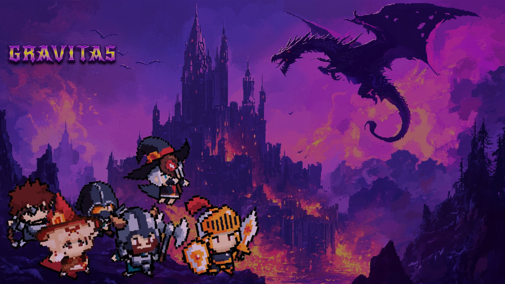
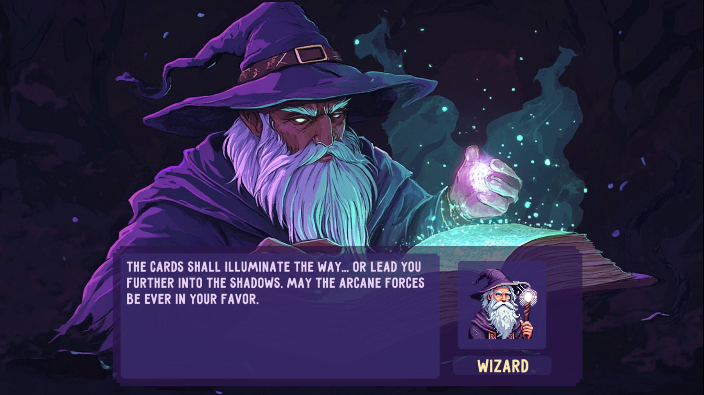
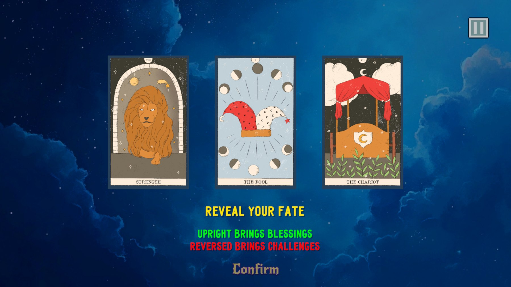

Technical art highlights
- Original score mapped to game states
- Readable SFX for dense combat
- Narrative pacing between battles
- Unity-ready audio delivery
01Overview
Gravitas is a pixel-art tower-defense game. You play a hero who summons allies onto a gravity-controlled battlefield to save a magic world and restore the balance between light and darkness. It was selected as a Featured Game at UCSD Triton Ware (Fall 2024).
I was the team’s Audio Designer and Narrative Designer. I composed the original soundtrack and sound effects, and co-designed the narrative and gameplay pacing that frame each battle.

02My contributions
Original soundtrack
Composed the score: main menu, interlude, several combat cues of rising intensity, tarot and magic-book themes, a death cue and the ending.
Sound effects
Created UI and combat feedback such as pawn placement, melee, archer, magic, dragon fire, hits and clicks.
Narrative design
Co-designed the story frame (the light/dark balance, the wizard’s tarot readings) and how story beats pace the battles.
Implementation-ready audio
Delivered cues as discrete Unity-ready clips so each game state could trigger its own music and SFX.
03Soundtrack
Each game state gets its own musical identity, so players always know where they are: calm at the menu, tension rising through the combat cues, mystery for the tarot and magic-book moments. Excerpts are 60 seconds.
04Sound effects
Short, readable feedback matters on a busy pixel battlefield. Click to play:


05Challenges & solutions
Keeping long battles from feeling repetitive
Tower-defense rounds run long, and one battle loop quickly wears thin.
A family of combat cues
Wrote several combat tracks of increasing intensity, so the music escalates with the game instead of looping one theme.
Feedback on a crowded screen
Dozens of pixel units act at once, and players need to know what their input did.
Distinct, short SFX per action
Gave placing, attacking, casting and taking damage their own short sounds so the soundscape stays readable.
Story that doesn’t interrupt play
Narrative had to frame the light/dark conflict without stalling the strategy loop.
Story at natural breaks
Placed story beats (interludes, the wizard, tarot readings) between battles, each with its own musical cue.
06Why it matters for technical art
- Audio taught me to design for game states and triggers, the same way I think about lighting states and VFX cues.
- Composing for pacing is why I can build rhythm systems (Rhythm) and time cameras and sound in cinematics (The Feeding).